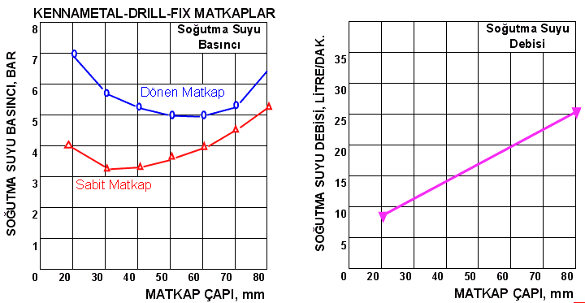
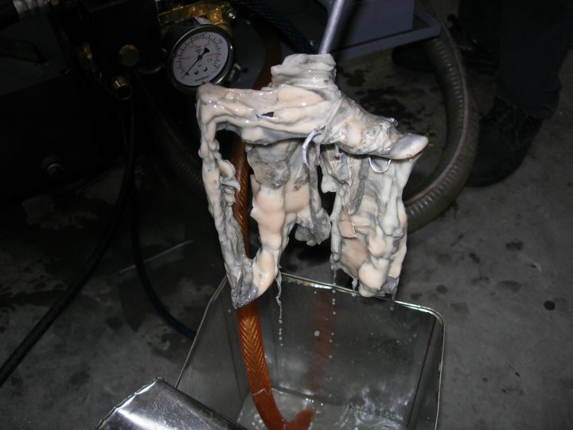

Michael
H. Heisenberg
Mak. Y. Müh.
Maysan A.Þ.
Mart 2007, Ýstanbul
CNC Tornalar ve Ýþleme Merkezleri Otomotiv, Havacýlýk ve Uzay, Týp, Enerji, Nükleer ve diðer sanayi dallarýnda, komple makinelerin ve tesislerin fonksiyonel parçalarýnýn üretiminde yaygýn olarak kullanýlýr.
Üretilen parçalarda mikron mertebesinde ölçü hassasiyeti elde edilmesi, kalite güvence sistemlerine uygunluk, otomatik üretime yatkýnlýk, kýsa iþleme süreleri ve bunlarýn sonucunda saðlanan ekonomi CNC Tornalarýn, Yatay veya Dik CNC Ýþleme Merkezlerinin endüstri ülkelerinde yaygýn olarak kullanýlmasýna yol açmýþtýr.
Tüm Talaþlý Ýþleme Tezgahlarýnda, parçanýn iþlenmesi sýrasýnda açýða çýkan ýsýnýn iþ parçasý, kesici takým ve tezgah üzerinde yaratacaðý negatif tesirleri azaltmak, talaþlarý soðutmak ve tezgah dýþýna taþýmak amacýyla kesme sývýlarý kullanýlýr. Eðer kesme sývýsý kullanýlmasaydý, kesici takým ömrü çok kýsa olur, ýsýnan iþ parçasý ve tezgah gövdesi uzar ve parça ölçüleri tolerans dýþýna çýkardý. (Not: 100 santimetre uzunluðunda bir çelik veya dökme demir parçanýn sýcaklýðý 1 derece santigrat arttýðýnda, boyu 12 mikron uzar).
Soðutma sývýsý genelde su ve ona katýlan belirli özellikleri haiz madeni yaðlardan oluþur. Yüksek performans gerektiren iþler için madeni yað yerine sentetik yaðlar kullanýlýr. Soðutma sývýsý kullanýlan yað cinsine göre berrak (þeffaf) veya emülsiyon (opak) olabilir.
Soðutma sývýsý bir tank içinde depolanýr. Buradan pompa yardýmýyla emilerek kesme iþleminin yapýldýðý noktaya basýnçla sevk edilir. CNC Torna ve Ýþleme merkezlerinde soðutma iþlemi iki þekilde yapýlýr.
a) Takým dýþýndan soðutma
b) Takým içinden soðutma
Takým Dýþýndan Soðutma, bilinen en eski soðutma þeklidir. Bundan yirmi sene öncesine kadar atölyelerde kalfa matkapta çelik malzemeyi delerken çýraðý bir kaba doldurduðu bor yaðýný delinen deliðe dökerek matkabý soðuturdu. Çýraðýn küçük bir ihmali HSS matkap ucunun yanarak maviden siyaha kadar renk deðiþtirmesine yol açar ve kalfa iþi durdurarak "matkap ucunu zýmpara taþýnda bilerdi; (bu sýrada çýrak ihmalinin kötü sonuçlarýný bilfiil" tecrübeyle!! öðrenmiþ olurdu).
Modern tezgahlarda bir pompa, tankta bulunan soðutma sývýsýný emerek borular ve nozullar yardýmýyla kesme iþleminin yapýldýðý yere fýþkýrtýr. Genelde freze ve benzeri takýmlarla yüzey iþlenirken bu metot takýmý ve parçayý yeterince soðutur. Keza tornada kesici ucun hemen üstünde bulunan nozul yeterli soðutmayý saðlar. Pompa basýnçlarý 3 ila 35 BAR arasýnda ve debi 10 ila 40 litre / dakika arasýnda deðiþir.
Fýþkýrtýlan soðutma sývýsý talaþlarý da uzaklaþtýrýr ve talaþ konveyörü yardýmýyla talaþlar tezgah dýþýna çýkarýlarak talaþ kovasýna dökülür.
Takým Ýçinden Soðutma metodu nispeten modern makineler ve kesici takýmlar için geçerlidir.
Küçük çaplý deliklerin, kör deliklerin ve uzun deliklerin delinmesi, Takým Ýçinden Soðutma kullanýlmasýný zorunlu kýlar. Çünkü bu durumlarda kesici takýmýn parçadan kesip ayýrdýðý "talaþýn delinen delikten tahliyesi zor olur; talaþlar matkabý veya kýlavuzu sýkýþtýrýr ve kýrýlmasýna" yol açar. Ayrýca bir matkap sýkýþmasa bile kesici ucu sürtünme sebebiyle çok ýsýnýr ve tahrip olur.
Matkap üreticileri içinde boydan boya delik (bir veya iki adet) bulunan sert metal veya takma uçlu matkaplar üretirler. Özellikle uzun delikleri delmek için tasarlanmýþ Namlu Matkaplarýnda Takým Ýçinden Soðutma kullanýlmasý þarttýr. Bu takýmlarda 70 BAR basýnca kadar soðutma sývýlarý kullanýlmaktadýr.
Takým Ýçinden Soðutma metodunda basýnçtan daha önemli olan unsur, soðutma sývýsýnýn debisidir. Kesici takým üreticileri muhtelif takýmlar için gereken basýnç ve debi miktarlarýný kataloglarýnda belirtirler. Aþaðýda bir örnek verilmiþtir.

Ýþletme sýrasýnda, tavsiye edilen debi ve basýncýn altýna düþülürse kesme performansý düþer, takým ömrü azalýr, iþ parçasý yüzey pürüzlülüðü artar ve parça toleranslarý geniþler, konum toleranslarý sapar.
Modern Kalite Yönetim sistemleri ilk parçadan itibaren son parçaya kadar bir kafile içindeki tüm ürünün vasýflarýnýn teknik resme uygunluðuna ilaveten, dalgalanmamasýný þart koþar. (Bu þart, bilindiði gibi Cpk ve Cmk deðerlerini hesaplamak suretiyle kontrol altýnda tutulur).
Takým içinden soðutma kullanýlan bir operasyonda soðutma sývýsýnýn geçtiði kanal ve borular týkanýrsa sývý basýncý artar fakat debisi düþer, kesici ucun parçayý kestiði noktaya iletilen sývý azalýr ve soðutma yetersiz kalýr.
Bir müþterimizin, tezgahýnda performans düþüklüðü ortaya çýktýðý þeklindeki þikayeti üzerine giden Servis Mühendisi, kullanýlan takýmlarýn içindeki kanallarýn talaþ ile dolduðunu ve sývý akýmýný kestiðini bulmuþtur. Kanallarý týkayan talaþý temizlemek mümkün olmadýðýndan problem ancak yeni takým kullanýlarak çözülmüþtür.
Fabrikalarda soðutma sývýsý ve filtreler daima ihmal edilir; "Soðutma sývýsý akýyorsa yeterli" görülür, ancak basýnç ve debisi bilinmez, sývý içindeki taþýnan maddelerin önemi kavranmaz. Filtreye ödenen para fuzuli bulunur, birçok tezgahta filtre bulunmadýðý veya yýrtýk olduðu müþahede edilmiþtir.
Burada bir benzetme yapýlabilir. Bir otomobil, kamyon veya iþ makinesi veya diðer bir araç sahibi motorunun yað filtresini belirli periyotlarla deðiþtirmezse motorun içindeki yataklarýn ve diðer hareketli elemanlarýn ömrünün çok kýsa olacaðýný bilir.
Keza hava filtresi zamanýnda deðiþtirilmez ise gözenekleri týkanýr ve yakýt sarfiyatý artar, motorun çekiþi düþer. Hava filtresi yýrtýk ise yolun tozu silindirlere kadar ulaþýr, yaðla karýþarak mükemmel bir aþýndýrýcý oluþturur ve kýsa zamanda silindir ve segmanlarý aþýndýrýr.
CNC Tezgahlarýnda filtrelemeye gereken önem verilmemesi de benzer sonuçlar doðurur.
Tüm metalik malzemelerde kesici takým talaþ kaldýrma sýrasýnda malzemeden çeþitli büyüklüklerde parçalar koparýr. Talaþ boyutlarý tornada yumuþak çelik iþlerken metrelere ulaþýr; döküm malzemelerde mikronlar mertebesinde kýrýntýlar þeklinde çýkar.
Ýri talaþlar talaþ kovasýna gönderilirken, bilhassa küçük partiküller soðutma sývýsý ile tanka ve oradan pompa yardýmýyla kesme noktasýna taþýnýr.
Soðutma sývýsý talaþ parçacýklarýný taþýyarak geniþ borulardan dar kanallara geçerken, kesit deðiþikliklerinin olduðu noktalarda dar kanala sýðamayan parçacýklar deliði týkar.
Ayrýca daha küçük boyutlu parçacýklar delik içine girer ve birbirini sýkýþtýrýr, sýkýþan parçacýklarýn üstüne diðerleri birikir ve kýsa zamanda sývýnýn geçiþi engellenir.
Sert metal matkaplarýn içine delinmiþ soðutma sývýsý kanallarýnýn çapý yaklaþýk 1 ila 2 mm'dir. Talaþ partikülleri deliðe girerse onu kolaylýkla týkayabilir. Bu mahzuru ortadan kaldýrmanýn en iyi çaresi soðutma suyunu pompadan önce filtreden geçirmek ve tanecikleri yakalayýp tutmaktýr.
Küçük talaþ kýrýntýlarý ayný zamanda pompalarýn hareketli elemanlarýný da aþýndýrýr. Yüksek basýnçlý pompalar genelde diþli tiptendir. Diþlerin arasýna giren partiküller bunlarý aþýndýrarak zarar verir. Döküm parçalarda döküm kabuðunun sertliðinin 550 HB (Brinell Sertliði) kadar olabileceði ve döküm kumu veya maça kumu ihtiva ettiði de düþünülürse mekanik pompalarýn filtrelenmemiþ soðutma sývýsýndan ne kadar zarar göreceði tahmin edilebilir.
Bütün bu anlatýlanlar CNC tezgahlarýn performansý ve ömrü üzerinde soðutma sývýsý filtrelenmesinin önemini ortaya koyar.
SOÐUTMA SIVISI FÝLTRELERÝ
Soðutma sývýsýnýn operasyon noktasýnda koparýlan talaþlarý sürükleyerek talaþ konveyörüne taþýmasý sýrasýnda iri talaþlar gravite (yerçekimi) yardýmýyla soðutma sývýsýndan ayrýlýr.
Ýnce talaþlar, döküm kumu, üstüpü artýklarý gibi küçük boyutlu maddeler sývý akýþý içinde taþýnýr. Soðutma sývýsýnýn tanka döküldüðü noktada bulunan bez veya kaðýt filtre katý partikülleri tutarak sadece temiz sývýnýn tanka gitmesine izin verir. Filtre cinsine göre zaman içinde dolar veya gözenekleri týkanýr,
Bez filtreler sökülerek yýkanýr ve temizlenir; kaðýt filtreler ise deðiþtirilir. Modern kaðýt filtreler bir makaraya sarýlmýþ olarak satýlýr. Makaradan açýlan kaðýt yatay olarak delikli sac üzerinde yayýlýr ve bir ucu boþ makaraya tespit edilir. Zaman içerisinde kaðýt filtre kirlendikçe kirli kýsmý boþ makaraya sarýlýr ve temiz yüzey soðutma sývýsýný süzer.
Bez filtreler, yýkanarak tekrar kullanma özelliði sebebiyle daha hesaplýdýr ve yaygýn olarak kullanýlýr. Yýrtýlan veya süzme özelliðini kaybeden bez filtre torbalarý deðiþtirilir.
Bez filtreler, yapýsýna göre 50 mikron, 10 mikron ve hatta 5 mikron boyutunda katý partikülleri süzebilir. Küçük boyutlu (örneðin masa tipi) tezgahlarda, kýymetli parçalarýn üretiminde, yüzey pürüzlülüðünün düþük olmasý gereken yerlerde 5 mikronluk filtrelerin kullanýlmasý tavsiye edilmektedir. Keza uzun delik delme iþlerinde (L/D > 8) dar gözenekli filtreler kullanýlmalýdýr.
Filtrelerin kullanýmýnda gösterilecek ihmal, öncelikle kalitenin düþmesine, arýzalar sebebiyle iþin aksamasýna ve daha sonra da mutlaka tezgah sahibi Þirketin bir gün yüksek tamir masraflarýyla karþýlaþmasýna yol açacaktýr.
Aþaðýdaki resim, Ýstanbul'da bulunan bir fabrikada uzun süre temizliði yapýlmamýþ bir filtre tankýndan çýkan bir nevi mantar olan canlýyý gösteriyor. Denizanasýna benzeyen bu mantardan kopan parçalar kesici takým deliklerini týkamýþtý. Tezgah soðutma sistemi tamamen boþaltýlarak yýkandý ve arýza giderildi.

Uzun süre temizlenmemiþ filtre tankýndan çýkan mantar canlýsý (tezgah: yatay iþleme merkezi)
|